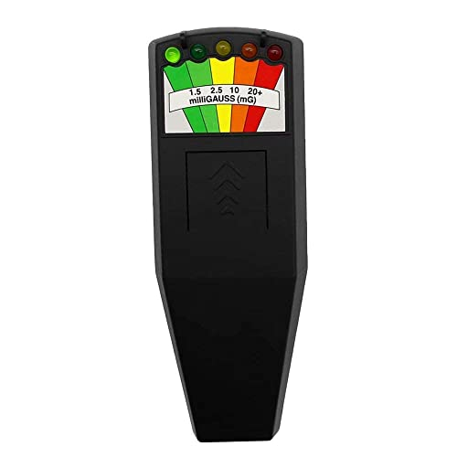
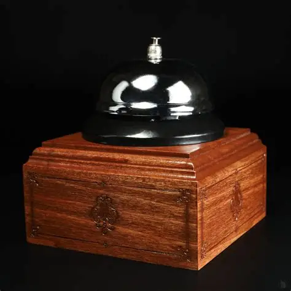
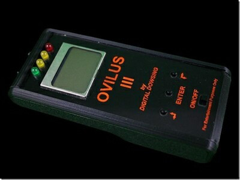
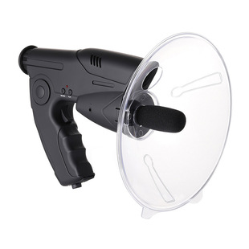
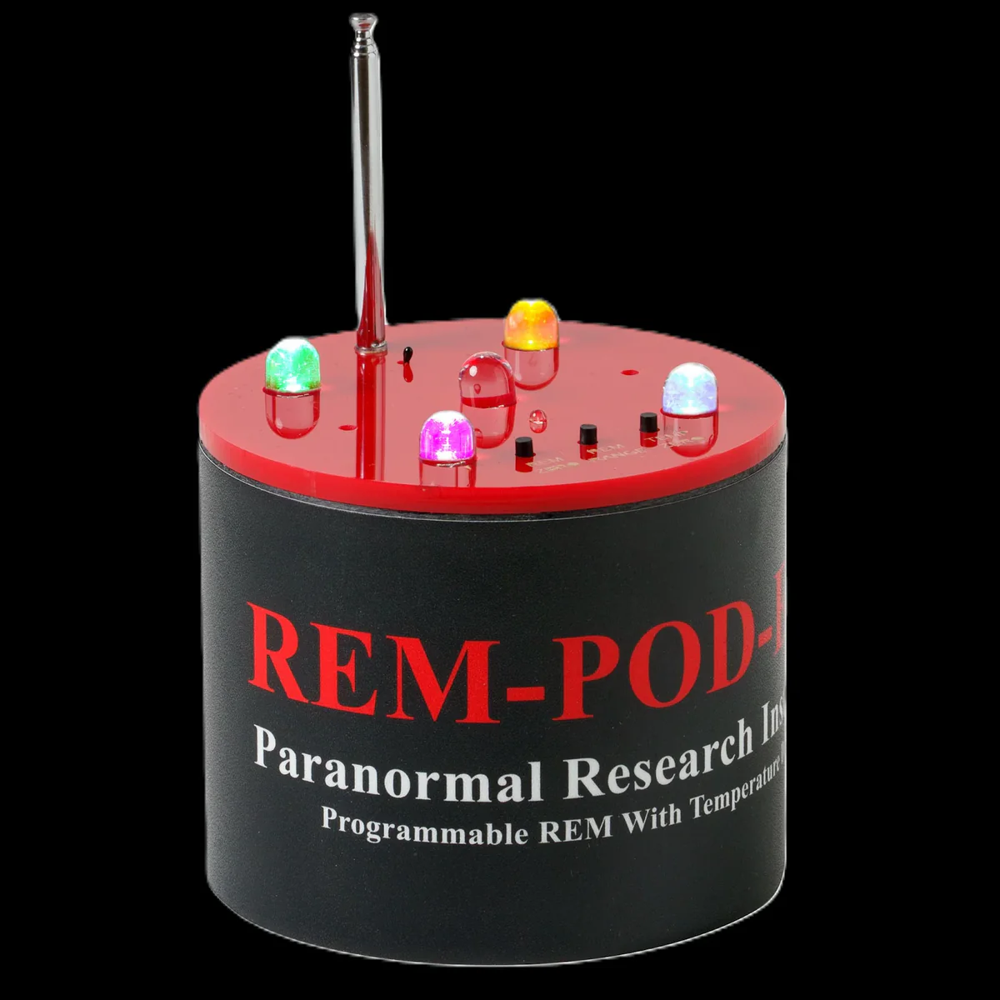

Az eszközök bemutatása
EMF reader
Az EMF reader másnéven, a K2 egy kicsi fekete doboz, amely öt színes LED-del van díszítve, amelyek mindegyike más EMF-értéket jelez. A K2 hatótávolsága 2 méter. EMF-kibocsátás érzékelésekor a leolvasó különböző számú LED-et világít fel, a mért érték szintjéhez tartozó hangmagassággal együtt. Hatöbb EMF-kibocsátás is van a hatótávolságon belül, a leolvasó a legmagasabb EMF-szintűt jelzi ki
Hogyan működik:
- Töltésszétválasztás: Az áramforrás belsejében (például kémiai reakciók vagy mágneses mező hatására) töltésszétválasztás történik.
- Potenciálkülönbség: A folyamat során az egyik póluson elektronhiány (pozitív pólus), a másikon elektrontöbblet (negatív pólus) keletkezik. Ez a különbség hozza létre az elektromotoros erőt.
- Áramgenerálás: Amikor az áramkört zárjuk, az EMF hajtja végre a munkát (mozgatja az elektronokat), így az elektromos áram elindulhat a vezetékben.
Spirit box
A Spirit box egy olyan eszköz, ami fehér zajt hoz létre azáltal, hogy folyamatosan vált különböző rádiófrekvenciákon, hogy felvegye a lehetséges hangokat, amelyek szellemtől származhatnak, főként különböző hangklipek pareidolia formájában, amelyeket összefűznek, hogy megfelelő kifejezéseknek vagy megfontolt válaszoknak hangozzanak a kérdésekre
Hogyan működik:
- Frekvencia-pásztázás: Az eszköz másodpercenként többször vált a csatornák között.
- Rádiótöredékek: A pásztázás során elcsípett tizedmásodperces szavak vagy szótagok nem alkotnak összefüggő értelmes beszédet.
- Fehér zaj generálása: A gyors váltakozás egy folyamatos statikus morajlást és fehér zajt hoz létre.
Parabolic mikrofon
A parabolamikrofon egy olyan speciális irányított mikrofon, amely egy parabolatükör (tányér) segítségével gyűjti és fókuszálja a hanghullámokat. Hasonló elven működik, mint a műholdvevő tányérok a rádióhullámok esetében. Kiválóan alkalmas távoli, halk hangok kiszűrésére egyetlen irányból
Hogyan működik:
- Fókuszálás: A tányér a szemből érkező, párhuzamos hanghullámokat a fizika törvényei szerint a fókuszpontba (gyújtópontba) veri vissza.
- Mikrofon elhelyezése: A tényleges mikrofonkapszula pontosan ebben a fókuszpontban helyezkedik el, befelé, azaz a tányér felé fordítva.
- Akusztikus erősítés: A nagy felületű tányér rengeteg hangenergiát gyűjt össze, így elektromos erősítés nélkül, tisztán növeli a hangnyomást a mikrofonnál.
- Irányítottság: A rendszer szinte csak abból az irányból vesz fel hangot, amerre a tányér pontosan néz, a hátulról vagy oldalról érkező környezeti zajokat pedig kiszűri.
REM-POD
A REM pod (Radiating Electromagnetism Pod) egy olyan elektronikus eszköz, amelyet a szellemvadászok és paranormális jelenségeket kutatók használnak az elektromágneses mező változásainak érzékelésére
Hogyan működik:
- Egy teleszkópos antennával folyamatos elektromágneses mezőt generál a közvetlen környezetében.
- Jelzés: Amikor egy tárgy vagy entitás megzavarja ezt a mezőt (például áthalad rajta), a készülék fény- és hangjelzést ad.
- Felépítés: A szakértők és kritikusok szerint a működési elve egy miniatürizált theremin hangszerre hasonlít.
Ovilus
Az Ovilus egy népszerű paranormális kommunikációs eszköz, amelyet a szellemvadászatban és a szellemekkel való közvetlen szóváltásban használnak. Úgy tervezték, hogy a környezeti és elektromágneses változásokat szavakká alakítsa, lehetővé téve a szellemek számára, hogy közvetlenül szavakat formáljanak meg és mondjanak ki.
Hogyan működik:
- Érzékelés: Méri a környezet hőmérsékletét, az elektromágneses mezőt (EMF) és egyéb fizikai tényezőket.
- Generálás: A mért adatokat egy belső adatbázishoz (szótárhoz) társítja, és a kiválasztott szót vagy kifejezést a beépített szövegfelolvasó hangosan kimondja.
Dead bell
A Dead Bell egy népszerű és elegáns, vintage stílusú paranormális mérőeszköz, amelyet a szellemvadászatok során a környezeti változások és az elektromágneses mezők (EMF) észlelésére, valamint a szellemekkel való közvetlen kommunikációra használnak.
Hogyan működik:
- Elektromágneses mező (EMF) érzékelése: A REM-podokhoz hasonlóan a Dead Bell egy beépített EMF-érzékelővel rendelkezik. A paranormális elméletek szerint a szellemek energiából állnak. Ha egy ilyen energiaforrás vagy entitás megközelíti a csengőt, az megváltoztatja az eszköz körüli elektromágneses teret.
- Automatikus hangjelzés: Amikor a szenzorok anomáliát vagy hirtelen energiamező-változást észlelnek, a szerkezet automatikusan megszólaltatja a fizikai csengőt.
| Eszközök | Hatékonyság | Ajánlottsága |
|---|---|---|
| EMF-reader | Nem bonyolult a használhatósága | Jobban ajánlott a REM-POD |
| Dead bell | Könnyen használható | Kevés helyet foglal |
| Ovilus | Könnyen használható | Kevés helyet foglal el |
| Parabolikus mikrofon | Nehéz használni | Elég sok helyet foglal el |
| REM-POD | Egy kicsit nehezebb használni | Kevés helyet foglal el |
Eszközökről néhány kép




